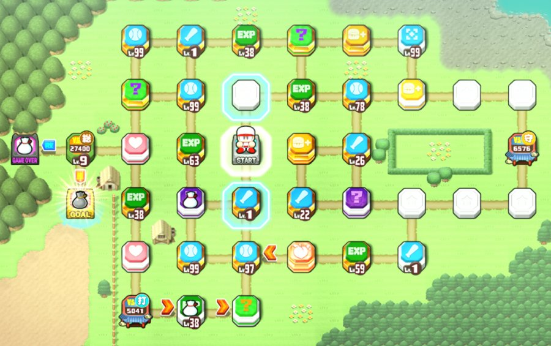
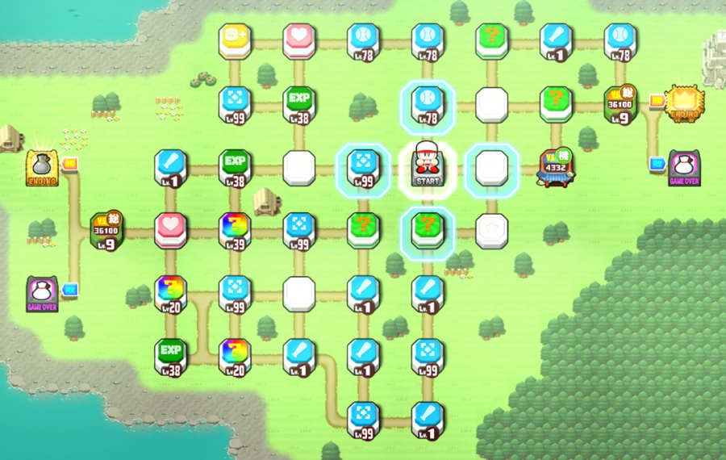

パワクエ 西球記
むずクエ攻略＆周回
パワクエ「西球記（さいきゅうき）」のむずクエを、エリアごとのルートと使う仙術で解説します。
マップの形は固定です。マスの種類は毎回変化しますが、ある程度法則があります。
デッキ必須アイテム
【ターンアップのスキルが付いたアイテム】
エリア1を満遍なく探索するには20ターン以上必要になるので、ターンアップが付いたアイテムは必須です。
専用アイテムだと袋ノ書に付くのを確認済みです。また、その他に分類されるアイテムに付きやすいです。
【金ノ書】
エリア2を満遍なく探索するには、回復の術 金と錬金の術によるコンボでターン回復が必須になります。持ち込みましょう！
エリア1

中央下の位置からスタート固定です。
スカウトマスがスタート位置の上にありますが、上からは神前試合のルートに入ることが出来ず、折り返して下から行かなければいけません。
スタート上のスカウトマスを踏みながら神前試合マスも通る場合、必然的に空白マスを多く通る事になるので、回復の術 空白を最初に使うのがオススメです。
回復の術 空白は、エリア2でも有効に働きます。
画像のようにスカウトマスを通って折り返し、左ルートへ進んだ場合は29ターンかかります。途中で回復マスが2回ありますがそれでもターンが足りないので、「ターンアップ」のスキルと、回復の術の発動が必須になります。
右ルートの方は直線的に移動できない場所があり、2ターン多く必要になるので注意が必要です。
桃マスでは、次のエリアに向けて回復の術 金を発動しましょう。
発動には金ノ書が必要になります。
エリア2

画面中央スタートです。
最初に錬金の術を発動しましょう。エリア1で使った回復の術 金と合わせて、ターンを回復しながら進めるようになります。
右ルートを時計回りに回ったあと、左上→左下と移動する事で神前試合マスと桃マスの両方を回収可能です。
桃マスで袋変換の術を使い、ゴールマスのレアリティを上げましょう。
エリア3

左は通常ゴール、右は祈願です。
エリア2で金マスをしっかり踏めていれば、余裕を持ってどちらに行くことも可能です。
西球記の攻略ページ


西球記の攻略（トップ）に戻る